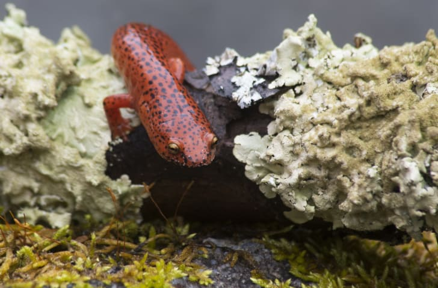

10 FAQs About National Parks
- GREAT SMOKY MOUNTAINS NATIONAL PARK
-

Location: Western North Carolina and Eastern Tennessee
Great Smoky Mountains National Park has been dubbed the "salamander capital of the world," and
it's home to 30 different species of "spring lizard," as they're called in Appalachia, including
the largest one in North America—the hellbender.
- GRAND CANYON NATIONAL PARK
-
 Location: Northern Arizona
Location: Northern Arizona
If you’re lucky, you may be able to witness a rare weather phenomenon called "total cloud
inversion," which sometimes occurs at the Grand Canyon when cool air gets trapped beneath a
layer of warm air creating a virtual sea of clouds.
- ROCKY MOUNTAIN NATIONAL PARK
-
Location:Northern Colorado
Visitors can drive along the scenic Trail Ridge Road, which has been called the "highway to the
sky" because it soars two miles above sea level at its highest point. This 48-mile strip
connects Grand Lake and Estes Park and delivers unparalleled views of the forests, tundra, and
meadows below.
- ZION NATIONAL PARK
-
 Location: Southwest Utah
Location: Southwest Utah
Only the adventurous can traverse The Subway in Zion National Park. To get to this tunnel carved
out of rock, visitors must hike for 9 miles (round-trip), scramble over boulders, climb down
waterfalls, and swim through creeks—"and the water is cold," according to Utah.com.
- YELLOWSTONE NATIONAL PARK
-
Location: Northwest Wyoming, Southern Montana, and Eastern Idaho
"Bear shows" were a popular tourist activity between 1890 and the 1940s, and the park eventually
installed wooden bleachers for spectators and a sign that read "Lunch Counter—For Bears Only."
Unsurprisingly, this set-up was a recipe for disaster.
- YOSEMITE NATIONAL PARK
-
 Location:Central California
Location:Central California
A tradition was born where each summer evening at 9 p.m. sharp, someone would shout "Let the
fire fall!" before pushing embers over the edge. These shows were banned from 1913 to 1917, and
again during World War II, but they weren't officially eliminated until 1968. The National Park
Service said the man-made attraction was better suited to Disneyland than the natural world, and
reasoned that the huge crowds also damaged local meadows.
- ACADIA NATIONAL PARK
-
Location: Maine's Mount Desert Island
If you want to be the first person in America to see the sunrise, visit the top of Acadia's
Cadillac Mountain between October 7 and March 6. The 1528-foot peak is the highest point along
the North Atlantic, making it a great vantage point to watch the Atlantic Ocean's glistening
waters as they're bathed in sunlight
- GRAND TETON NATIONAL PARK
-
 Location: Northwest Wyoming
Location: Northwest Wyoming
They called the three highest mountain peaks, les trois tétons , which translates to "the three breasts" or "the three teats." It's believed that the trappers were referring specifically to Grand Teton, Teewinot Mountain, and Mt. Owen. At any rate, the name stuck and was later anglicized.
- OLYMPIC NATIONAL PARK
-
 Location: Washington's Olympic Peninsula
Location: Washington's Olympic Peninsula
-
 Location:
Location: